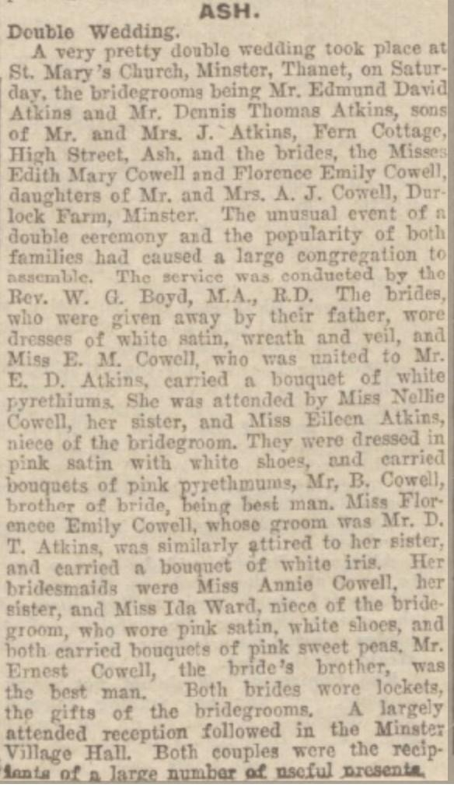

Florence Emily Atkins (née Cowell) 1911 - c1999
[ Home ] | [ Calendar ] | [ Surnames Index ] | [ Census Index ] | [ Family History ]The child of Alfred Cowell (a transport driver) and Fanny Austen, Florence Cowell, the first cousin once-removed on the mother's side of Nigel Horne, was born in Stourmouth, Kent, England on Jul 7, 19111,2,3,4 and married Dennis Atkins (a heavy farm laborer with whom she had 1 child, Robert Francis) in Thanet, Kent, England on Jun 4, 19325.
During her life, she was living at Durlock Farm Cottages, Minster in Thanet on Jun 19, 19211; and at Little Knell Farm Cottage, Knell Lane, Ash, Kent on Sep 29, 19396.
She died c. Nov 1999 in Thanet2,3.
Parents
- Alfred John was born on May 8, 1880
- Fanny was born c. May 1883
Children
- Robert Francis was born on Aug 26, 1940
Citations
- 1921 Census Of England & Wales - Findmypast (was age 9 and the daughter of the head of the household)
- England & Wales deaths 1837-2007 - Findmypast
- England & Wales, Death Index: 1984-2005 Online publication - Provo, UT, USA: The Generations Network, Inc., 2007.Original data - General Register Office. England and Wales Civil Registration Indexes. London, England: General Register Office. © Crown copyright. Published by permission of the Cont
- England & Wales, FreeBMD Birth Index, 1837-1915 Online publication - Provo, UT, USA: The Generations Network, Inc., 2006.Original data - General Register Office. England and Wales Civil Registration Indexes. London, England: General Register Office. © Crown copyright. Published by permission of the Cont
- England & Wales, Marriage Index: 1916-2005 Online publication - Provo, UT, USA: The Generations Network, Inc., 2009.Original data - General Register Office. England and Wales Civil Registration Indexes. London, England: General Register Office. © Crown copyright. Published by permission of the Cont
- 1939 Register - Findmypast (was the wife of the head of the household)
Media
Double Wedding

England & Wales births 1837-2006 - BMD/B/1911/3/AZ/000307/140
1939 Register Image - TNA-R39-1819-1819C-006
England & Wales marriages 1837-2008 Transcription - BMD-M-1932-2-AZ-000214-094
England & Wales deaths 1837-2007 Transcription - BMD-D-1999-11-82915205
1921 Census of England & Wales - GBC/1921/RG15/04429/0549/05
Family Tree

Generated by ged2site. Last updated on Jun 11, 2024